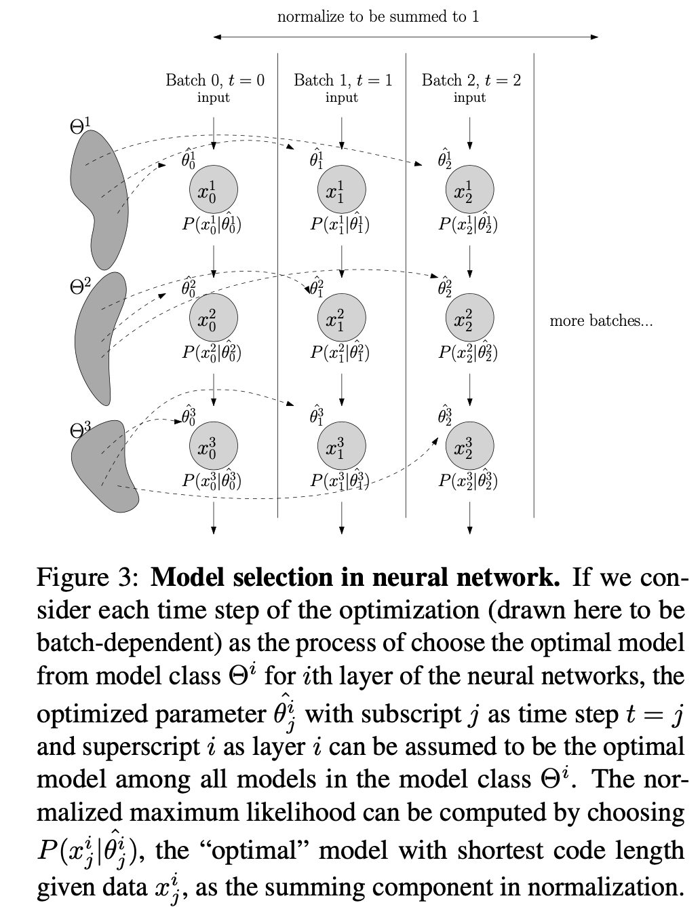
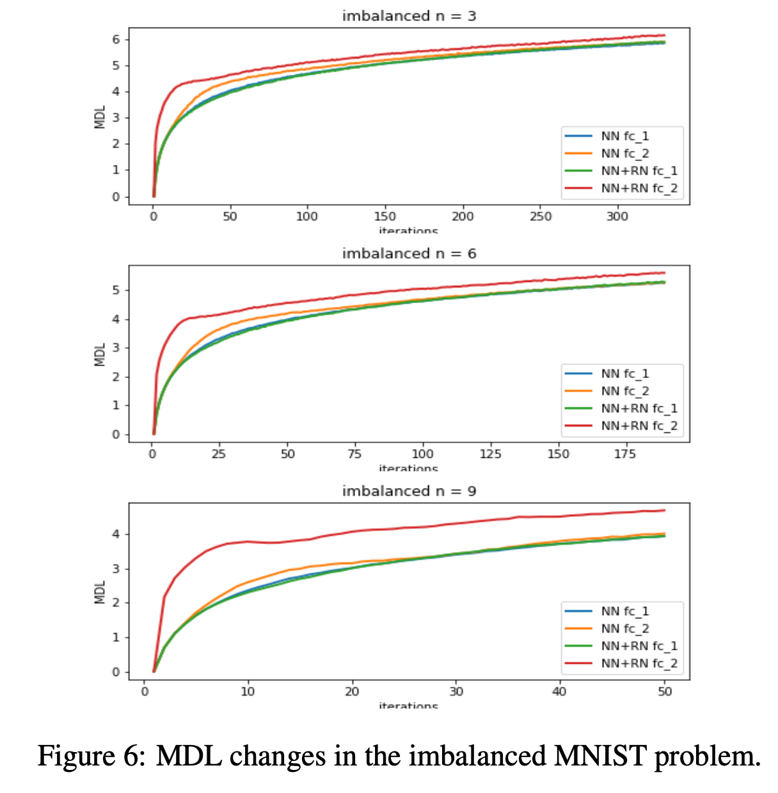
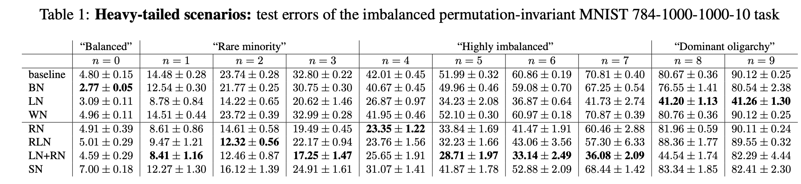
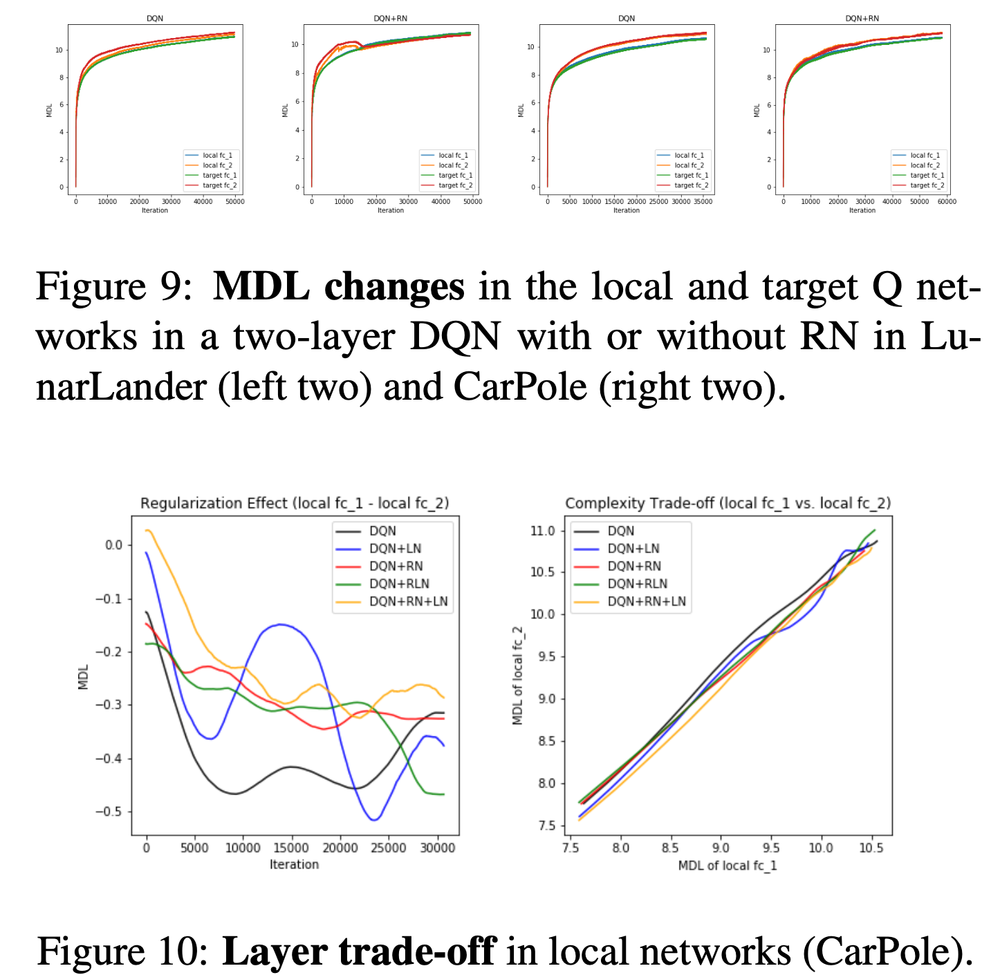
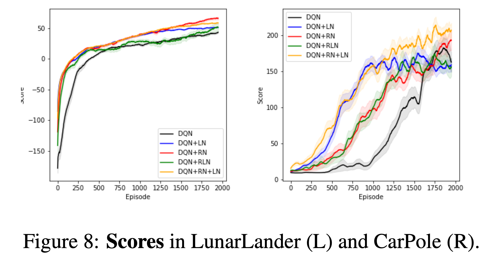

GitHub code: https://github.com/doerlbh/UnsupervisedAttentionMechanism
Treating each layer of neurons in a neural network as a communication system, I formulate the optimization process as a model selection process. Under this assumption, I can incrementally compute the minimum description length of each layer as an unsupervised attention mechanism, facilitating our understanding of the theory behind deep learning.
Inspired by the adaptation phenomenon of neuronal firing, we propose an unsupervised attention mechanism (UAM) which computes the statistical regularity in the implicit space of neural networks under the Minimum Description Length (MDL) principle. Treating the neural network optimization process as a partially observable model selection problem, UAM constrained the implicit space by a normalization factor, the universal code length. We compute this universal code incrementally across neural network layers and demonstrated the flexibility to include data priors such as top-down attention and other oracle information. Empirically, our approach outperforms existing normalization methods in tackling limited, imbalanced and nonstationary input distribution in computer vision and reinforcement learning tasks. Lastly, UAM tracks dependency and critical learning stages across layers and recurrent time steps of deep networks.
[1] Lin, B. (2019). Neural Networks as Model Selection with Incremental MDL Normalization. Human Brain and Artificial Intelligence, (Vol. 1072, pp. 195-209). Springer Nature.
link: https://link.springer.com/chapter/10.1007/978-981-15-1398-5_14
[2] Lin, B. (2019). Unsupervised Attention Mechanism across Neural Network Layers. arXiv preprint arXiv:1902.10658.
link: https://arxiv.org/abs/1902.10658
The main idea of the project is that we consider the neural network optimization process as a partially observable model selection problem, where the best model being selected is the current state of learned model parameters:

We tested it in several scenarios. MNIST, the classical computer vision problem, for instance, offers a lens for a simple two-layer neural network with or without a normalization factor (computed as the incremental minimum description length that I proposed in the paper). Here shown is a variant of the original problem, where I artificially installed an imbalanced distribution onto the training set such that certain class is highly downsampled. Since now we can approximate it directly, we can visualize them across the training time:

We may also see that, with the regularity normalization I proposed, the model is much more robust to the nonstationary data distribution in the imbalanced MNIST problem.

Similarly, we can apply the same regularization to the reinforcement learning games, e.g. LunarLanding v2 game in the OpenAI gym environment. We can track the unsupervised attention mechanism:

We can also see that the performance is better with our regularization method.

To better understand the perspective I proposed, I am comparing my method with other information theoretical methods such as mutual information. Stay tuned~